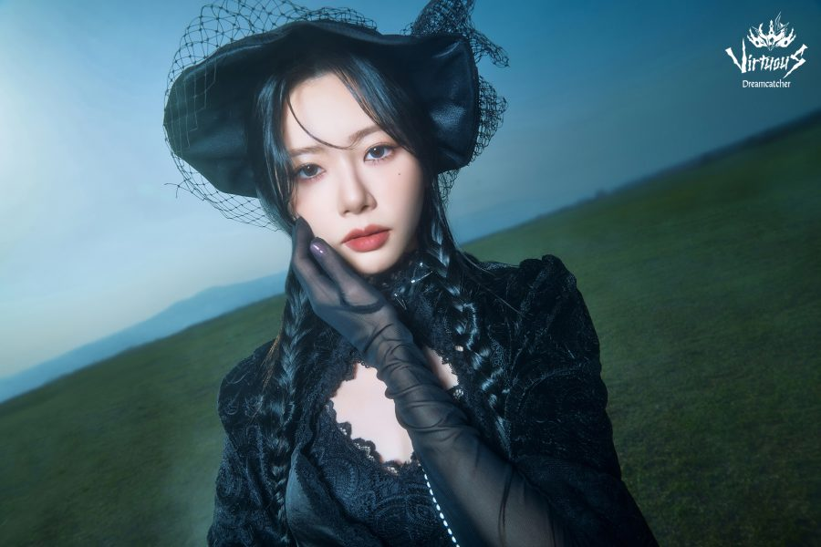

Jiu

Kim Minji(김민지), mais conhecida como Jiu, nasceu no dia 17 de Maio de 1994, em Daejeon - Coreia do Sul.
Alguns fatos sobre a Jiu:
- Ela é a líder e a mais velha do grupo
- Se deu o apelido de Pink Princess
- É uma grande fã de girl groups de K-POP
- Foi trainee por 2 anos e meio
- Muito expressiva e extrovertida
Redes sociais da Jiu: Instagram
Voltar